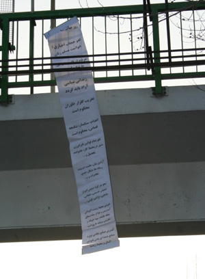

|
|
حرکت مشترک زنان چپ در تهران و کرج در8 مارس
جمعه23 اسفند 1387
حرکت مشترک زنان چپ در تهران و کرج در روزجهانی زن
پس از گفتگو و برنامه ريزی های فراوان روز يکشنبه ۱۸ اسفند برای اجرای حرکت مشترک زنان چپ انتخاب شد: ساعت ۵ تا ۳۰/۵ غروب همزمان در تهران و کرج. چهار گروه درتهران و دو گروه در کرج. از چهارگروه تهران دوگروه موظف شدند که علاوه بر پخش تراکت به نصب طومار شعارها نيز بپردازند. دو گروه ديگر وظيفه اشان پخش تراکتها بود. طومارها در بالای پل های عابر پياده: يکی بالای پل عابر پياده ی ميدان هفت تير و ديگری بالای يکی از پل های بزرگراه جلال آل احمد نصب شد. تراکت های تهران در ميدان هفت تير، ميدان ولي عصر، پارک دانشجو، ميدان انقلاب، ستارخان، مجتمع تجاری ميلاد نور، ستارخان، گيشا، حکيميه تهرانپارس، شهرک اميد در شرق تهران و در کرج: در منطقه پل آزادگان و سه راه گوهردشت به اشکال مختلف پخش شد: تعدادی از تراکتها به دست مردم داده شد، تعدادی در خانه ها و کوچه ها انداخته شد. و تعدادی ديگر از بالای ساختمانها و يا پلهای هوايی عابرپياده و يا در خيابانها بين جمعيت پخش شد.

برخی از شعارهايی که روی طومارها نصب شده بودند ويا به صورت تراکت پخش شدند:
هشت مارس روزجهانی زن گرامی باد
لغو حجاب اجباری: خواست مسلم زنان
مردم از فقر و گرانی به تنگ آمدهاند
زندانی سياسی آزاد بايد گردد
گلزار خاوران ماندگار در تاريخ ايران و جهان
آزادی بيان، عقيده، انديشه، رسانه، تشکل، تجمع، تظاهرات و...
آزادی زنان، آزادی جامعه
کارخانگی زنان در خانواده بيگاری آشکار است
نابودی محيط زيست، آلودگی آب، زمين و هوا از سياست های سلطه طلبانه، سودجويانه و تخريبی سرماي هداری است
جهان ديگری ممکن است: به دور از سلطه وسرمايه...
خانواده مردسالاری از عوامل تحکيم فرودستی زنان است
خشونت جسمی و روانی عليه زنان در همه عرصه ها ممنوع
لغو هرگونه شرايط نابرابر کار زنان، لغو قراردادهای موقت، لغو نابرابری دستمزد برای کار برابر
اعدام، سنگسار، شکنجه، قصاص و... محکوم است
محو نظام سلطه و سرمايهی جهاني
محو هرگونه تبعيض اعم از جنسيتی، طبقاتی، حقوقی، مذهبی، نژادی، قومی و...
گسترش صنايع نظامی به ويژه صنايع هستهای يعنی نابودی انسان و محيط زيست و..
آيا میدانيد به جای صرف بودجه های کلان برای جنگ و کشتار می توان ميليو نها امکان شغل سالم ايجاد کرد
ورزش عاری از بار جنسيتی: خواست زنان
ورزش آزادنه در همه رشته ها حق مسلم زنان است
در زير گزارشی است از يکی از گروه های تهران که مناطق: هفت تير، ميدان وليعصر، پارک دانشجو و ميدان انقلاب را پوشش دادند:
از مدتها قبل در انتظار روزجهانی زن شوروشوقی برما حاکم بود و از سويی نگرانی از اينکه با توجه به اوضاع و احوال نامساعد آيا می توان مراسم بزرگداشتی داشت يانه.
در ايران زنان درگير مشغله ها و مسائل گوناگونی هستند. در مناسبت های ويژه و نقاط عطفی چون ۸ مارس که اولويت آن ساير مسائل را تحتالشعاع قرار میدهد کارها فشردهتر میشوند، بخصوص با توجه به جوحاکم براين روزها که آخرين روزهای سال است، شروع سال جديد و نوروز.
حوالی عصر به سمت ميدان هفت تير، يکی از شلوغ ترين ميادين مرکزی تهران روانه شديم با طوماری از شعارهايی که چکيده ی تفکری در اقليت بود.
پس از يک بررسی سريع بر روی اولين پل هوايی عابر پياده در بلوار کريمخان رفتيم و طومار را نصب کرديم. به هنگام پايين آمدن از پله ها رانندهی اتوموبيلی که تصادفا هنگام عبور ما را ديده و توقف کرده بود، با اشارهی سرودست از ما حمايت کرد. از اين حرکت حس مثبتی در ما ايجاد شد: اينکه علیرغم تمام فشارها و سرکوب ها هنوز حس اعتراض و مبارزه جويی در مردم زنده است.
به سوی ميدان ولیعصر راهی شديم. به بالای يکی ازساختمان های تجاری رفتيم و از پل ارتباطی بين دو ساختمان اين پاساژ مقداری از تراکتها را به پايين ريختيم. دو نفر از پنجره باز ساختمانی ما را ديدند و وقتی کاغذها در هوا پخش شد فرياد تشويق آنان نيز به هوا برخاست. با ديدن عابرانی که تراکتها را برداشته با تعجب اطراف را نگاه میکردند و به خواندن میپرداختند احساس شعف میکرديم. به ميدان هفت تير برگشتيم و بر روی پل هوايی عابر پياده که درست مقابل مسجد است، تعدادی ديگر از تراکت ها را پخش کرديم. پس از آن به ميان عابرين رفتيم و ضمن تبريک روز زن با تکتک مردم صحبت کرده و تراکتها را به دست آنان داديم. عکس العمل ها و برخوردهای مردم بسيار خوب بود. بعضی از زنان ضمن تشکر می گفتند در اينجا کسی به فکر زنان نيست و از اينکه شما به ياد ما هستيد خوشحاليم. متاسفانه تعدای از مردم به ويژه زنان از وجود چنين روزی بیاطلاع بودند و در اين مورد سوال میکردند. بعضی از مردان خودشان به سمت ما آمده و سوال میکردند و تراکتها را میگرفتند که پخش کنند.
روی هم رفته برخورد مردم حمايتگرانه و تشويق کننده بود. اين تجربه نشان داد که علیرغم جو اختناق و سرکوب حاکم و فضای پليسی به ويژه در مناسبت های خاص که گاه در حد حکومت نظامی فضا پليسی می شود، می توان با مردم مستقيم ارتباط برقرار کرد و نظرات خود را طرح نمود.
۲۰ اسفند ۱۳۸۷